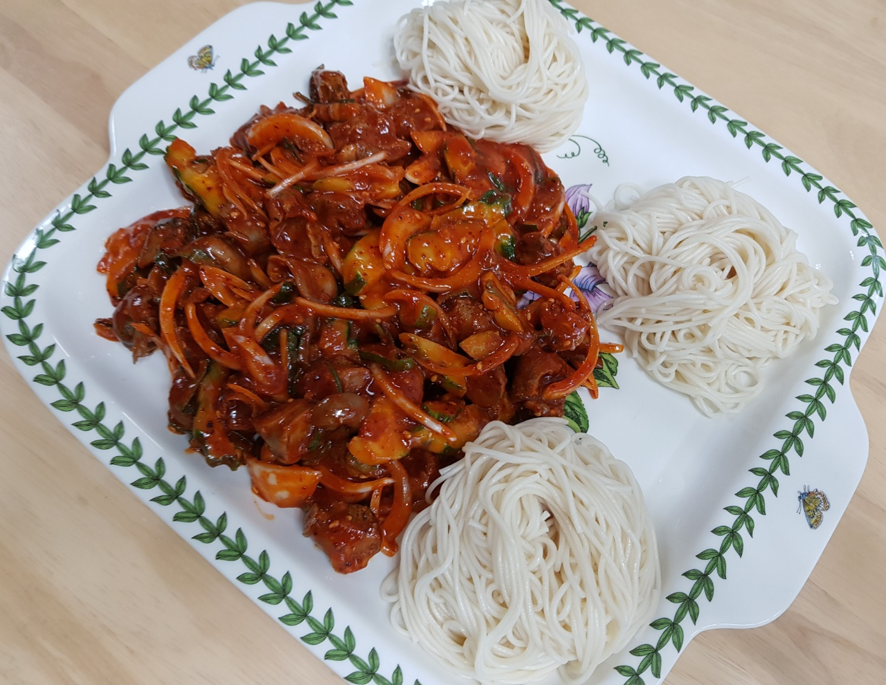

골뱅이무침

- 재료
골뱅이 1캔(400g), 양파 1/2개, 오이 1/2개, 소면 1줌, 고추장 3.5T, 고춧가루 1T, 설탕 3.5T
식초 3.5T, 다진마늘 1T, 참기름 1T, 소금 톡톡, 참깨 톡톡
- 조리순서
- 오이는 반달 모양으로, 양파는 채썰어서 준비합니다.
골뱅이는 흐르는 물에 씻어서 체에 받쳐 물기를 뺀 후, 적당한 크기로 썰어줍니다.
- 고추장 3.5T, 고춧가루 1T, 설탕 3.5T, 식초 3.5T, 다진마늘 1T, 참기름 1T, 참깨 톡톡 넣어서 양념을 만듭니다.
- 볼에 야채와 골뱅이, 양념장을 넣고 잘 섞습니다.
- 끓는 물에 소금을 약간 넣고 3분간 소면을 삶은 후, 찬물에 여러번 행궈서 체에 받쳐 물기를 뺍니다.
물이 끓어오를 때 찬물을 조금씩 부워주면 면발이 더 쫄깃해집니다.
- 소면을 돌돌 말아서 접시에 올리고, 골뱅이무침을 담아주시면 됩니다. 잘 섞어서 드세요.